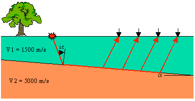
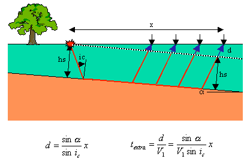
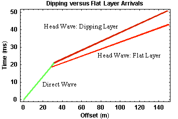

Head Waves From a Dipping Layer: Shooting Down Dip
Understanding how a dipping interface will affect refraction observations is a simple extension of the principles that we've already described. Consider the structure and the acquisition geometry shown below.

A high velocity halfspace underlies a lower velocity layer. The boundary between the layer and the halfspace dips from left to right. Notice that in this example, the source is to the left (up dip) of the receivers.
As was the case in the other examples where velocity increases with depth, in this case, head waves will be generated along the top of the halfspace that will propagate back up through the layer and be observed on the surface of the Earth. Raypaths for the head wave observed at four different offsets are shown in red in the figure below. Notice, if we were able to put geophones inside the Earth along a line that passes through the source and parallels the top of the halfspace (black dashed line), we would observe the head wave as if it had been generated on a flat boundary. Thus, the times that it takes the head wave to travel from the source back up to the black dashed line are identical to the times we've discussed for flat boundaries.

Our geophones, however, are not sitting within the Earth. They're sitting on the surface of the Earth. The head waves must travel an extra distance beyond the black dashed line to reach our geophones (blue extensions to the red ray paths). Notice that the distance the head wave must travel beyond the black dashed line increases with offset. Therefore, when compared to the travel times we would expect from a flat layer, the dipping layer causes the travel times of the refracted arrival to be delayed. The size of the delay increases with offset.
It is easy to approximate* how much later the head wave is observed at every offset. Knowing the dip of the layer, α, and the offset, x, the extra ray path traveled, d, can be easily computed. Dividing this distance by the velocity, V1, gives us the extra travel time. An equation for this extra time is shown in the figure above. Notice that the amount of extra travel time increases in proportion to the offset, x. Thus, like the flat layer case, we would expect the travel-time curve for the head wave off of a dipping layer to define a straight line versus offset.
The travel times observed from this dipping layer are shown below, along with the times that would be observed if geophones were placed along the black dashed line (the flat layer equivalent).

Direct arrivals are shown in green. They are not affected by dip on the layer. The head wave generated from the dipping layer as observed on the surface of the Earth is shown in dark red. Shown in bright red is what be observed on the black dashed line. As expected, the head wave observed on the Earth's surface arrives at later times, and this time difference increases with offset.
Thus, if we were to collect data over a dipping layer by shooting down dip, the following points would be true:
- We would not be able to tell the layer was dipping from the shape of the travel-time curve. In both the dipping and non-dipping layer case, the curve consists of two linear segments,
- We could compute the velocity of the layer from the slope of the travel-time curve that defines the direct arrival,
- When using the slope of the travel-time curve for the head wave, we would compute a velocity for the halfspace that is too small, and
- Using the velocity calculated above and the zero offset time, t0, we would compute a depth to the layer boundary larger than the distance to the interface beneath the source, hs.
Seismology
- Simple Earth Model: Low-Velocity Layer Over a Halfspacepg 11
- Head Wavespg 12
- Records of Ground Motionpg 13
- Travel-time Curves for a Simple Earth Modelpg 14
- First Arrivalspg 15
- Determining Earth Structure from Travel Timespg 16
- Derivation of Travel Time Equationspg 17
- High-Velocity Layer Over a Halfspace: Reprisepg 18
- Picking Times of Arrivalspg 25
- Wave Propagation with Multiple Horizontal Layerspg 26
- Travel Time Curves from Multiple Horizontalpg 27
- Hidden Layerspg 28
- Head Waves from a Dipping Layer: Shooting Down Dippg 29
- Head Waves from a Dipping Layer: Shooting Up Dippg 30
- A Field Procedure for Recognizing Dipping Bedspg 31
- Estimating Dips and Depths from Travelpg 32